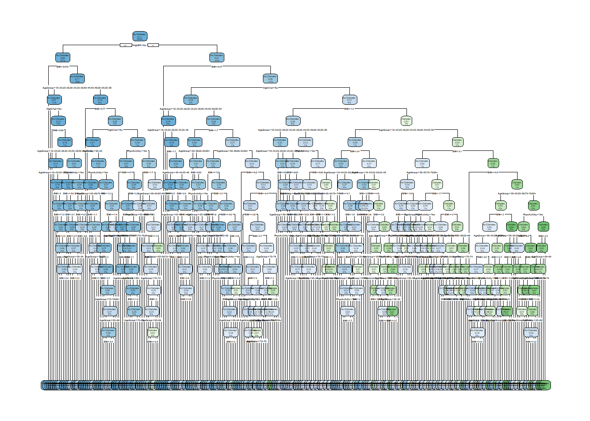

library(tidyverse)
library(tidymodels)
library(caret)
library(yardstick)
library(glmnet)
library(rpart.plot)
library(ranger)Modeling: Predicting Diabetes Risk
Introduction
data_raw = read_csv("diabetes_binary_health_indicators_BRFSS2015.csv")Rows: 253680 Columns: 22
── Column specification ────────────────────────────────────────────────────────
Delimiter: ","
dbl (22): Diabetes_binary, HighBP, HighChol, CholCheck, BMI, Smoker, Stroke,...
ℹ Use `spec()` to retrieve the full column specification for this data.
ℹ Specify the column types or set `show_col_types = FALSE` to quiet this message.# convert variables to factors
diabetes_data <- data_raw %>%
mutate(
Diabetes_binary = factor(Diabetes_binary, levels = c(0, 1), labels = c("No Diabetes", "Diabetes")),
PhysActivity = factor(PhysActivity, levels = c(0, 1), labels = c("No", "Yes")),
HighChol = factor(HighChol, levels = c(0, 1), labels = c("No", "Yes")),
HighBP = factor(HighBP, levels = c(0, 1), labels = c("No", "Yes")),
AgeGroup = factor(Age, levels = 1:13, labels = c(
"18–24",
"25–29",
"30–34",
"35–39",
"40–44",
"45–49",
"50–54",
"55–59",
"60–64",
"65–69",
"70–74",
"75–79",
"80+"
))
)set.seed(101)
diabetes_split = initial_split(diabetes_data, prop = .7)
diabetes_train = training(diabetes_split)
diabetes_test = testing(diabetes_split)
cv_folds = vfold_cv(diabetes_train, 5)Log Regression Model
diabetes_rec1 = recipe(Diabetes_binary ~ BMI + AgeGroup + PhysActivity, data = diabetes_train) %>%
step_normalize(all_numeric(), -Diabetes_binary)
diabetes_rec2 = recipe(Diabetes_binary ~ BMI + AgeGroup + PhysActivity + HighBP, data = diabetes_train) %>%
step_normalize(all_numeric(), -Diabetes_binary)
diabetes_rec3 = recipe(Diabetes_binary ~ BMI + AgeGroup + PhysActivity + HighChol + HighBP, data = diabetes_train) %>%
step_normalize(all_numeric(), -Diabetes_binary)Create Workflows
log_spec = logistic_reg() %>%
set_engine("glm")
log_workflow1 = workflow() %>%
add_model(log_spec) %>%
add_recipe(diabetes_rec1)
log_workflow2 = workflow() %>%
add_model(log_spec) %>%
add_recipe(diabetes_rec2)
log_workflow3 = workflow() %>%
add_model(log_spec) %>%
add_recipe(diabetes_rec3)Fit to CV Folds
log_res_fit1 = log_workflow1 %>%
fit_resamples(cv_folds, metrics = metric_set(accuracy,mn_log_loss))
log_res_fit2 = log_workflow2 %>%
fit_resamples(cv_folds, metrics = metric_set(accuracy,mn_log_loss))
log_res_fit3 = log_workflow3 %>%
fit_resamples(cv_folds, metrics = metric_set(accuracy,mn_log_loss))Collect Metrics
rbind(log_res_fit1 %>% collect_metrics(),
log_res_fit2 %>% collect_metrics(),
log_res_fit3 %>% collect_metrics()) %>%
mutate(Model = c("Model1", "Model1", "Model2", "Model2", "Model3", "Model3")) %>%
select(Model, everything())# A tibble: 6 × 7
Model .metric .estimator mean n std_err .config
<chr> <chr> <chr> <dbl> <int> <dbl> <chr>
1 Model1 accuracy binary 0.859 5 0.000541 Preprocessor1_Model1
2 Model1 mn_log_loss binary 0.358 5 0.00108 Preprocessor1_Model1
3 Model2 accuracy binary 0.860 5 0.000560 Preprocessor1_Model1
4 Model2 mn_log_loss binary 0.345 5 0.00106 Preprocessor1_Model1
5 Model3 accuracy binary 0.861 5 0.000680 Preprocessor1_Model1
6 Model3 mn_log_loss binary 0.340 5 0.00113 Preprocessor1_Model1Finding COnfustion Matrix
log_train_fit = log_workflow3 %>%
fit(diabetes_train)
conf_mat(diabetes_train %>%
mutate(estimate = log_train_fit %>%
predict(diabetes_train) %>%
pull()), Diabetes_binary, estimate) Truth
Prediction No Diabetes Diabetes
No Diabetes 151465 23209
Diabetes 1420 1482conf_mat(diabetes_test %>%
mutate(estimate = log_train_fit %>%
predict(diabetes_test) %>%
pull()), Diabetes_binary, estimate) Truth
Prediction No Diabetes Diabetes
No Diabetes 64863 10001
Diabetes 586 654Testing on Test Set
log_workflow3 %>%
last_fit(diabetes_split, metrics = metric_set(mn_log_loss)) %>%
collect_metrics()# A tibble: 1 × 4
.metric .estimator .estimate .config
<chr> <chr> <dbl> <chr>
1 mn_log_loss binary 0.338 Preprocessor1_Model1Fit to the entire dataset
final_log_model = log_workflow3 %>%
fit(diabetes_data)
tidy(final_log_model)# A tibble: 17 × 5
term estimate std.error statistic p.value
<chr> <dbl> <dbl> <dbl> <dbl>
1 (Intercept) -4.28 0.117 -36.4 8.83e-291
2 BMI 0.467 0.00588 79.4 0
3 AgeGroup25–29 0.0768 0.146 0.526 5.99e- 1
4 AgeGroup30–34 0.355 0.131 2.71 6.72e- 3
5 AgeGroup35–39 0.805 0.124 6.47 9.51e- 11
6 AgeGroup40–44 1.07 0.122 8.78 1.57e- 18
7 AgeGroup45–49 1.30 0.120 10.8 3.07e- 27
8 AgeGroup50–54 1.54 0.119 13.0 1.44e- 38
9 AgeGroup55–59 1.64 0.118 13.8 1.47e- 43
10 AgeGroup60–64 1.85 0.118 15.7 1.66e- 55
11 AgeGroup65–69 2.01 0.118 17.0 8.06e- 65
12 AgeGroup70–74 2.09 0.118 17.6 1.08e- 69
13 AgeGroup75–79 2.07 0.119 17.4 4.10e- 68
14 AgeGroup80+ 2.00 0.119 16.8 1.55e- 63
15 PhysActivityYes -0.361 0.0133 -27.2 8.82e-163
16 HighCholYes 0.675 0.0132 51.3 0
17 HighBPYes 0.996 0.0143 69.9 0 log_final_fit = log_workflow3 %>%
last_fit(diabetes_split, metrics = metric_set(accuracy, mn_log_loss))
log_final_fit %>%
collect_metrics# A tibble: 2 × 4
.metric .estimator .estimate .config
<chr> <chr> <dbl> <chr>
1 accuracy binary 0.861 Preprocessor1_Model1
2 mn_log_loss binary 0.338 Preprocessor1_Model1Classification Tree
Define model and engine
tree_spec = decision_tree(
cost_complexity = tune(),
tree_depth = tune(),
min_n = 20
) %>%
set_engine("rpart") %>%
set_mode("classification")Create Workflow
tree_workflow = workflow() %>%
add_recipe(diabetes_rec3) %>%
add_model(tree_spec)Select tuning parameters
tree_grid = grid_regular(
cost_complexity(),
tree_depth(),
levels = list(cost_complexity = 10, tree_depth = 5)
)
tree_fits = tree_workflow %>%
tune_grid(resamples = cv_folds,
grid = tree_grid,
metrics = metric_set(mn_log_loss))
tree_fits %>%
collect_metrics() %>%
filter(.metric == "mn_log_loss") %>%
arrange(mean)# A tibble: 50 × 8
cost_complexity tree_depth .metric .estimator mean n std_err .config
<dbl> <int> <chr> <chr> <dbl> <int> <dbl> <chr>
1 0.0000000001 15 mn_log_loss binary 0.351 5 0.00193 Prepro…
2 0.000000001 15 mn_log_loss binary 0.351 5 0.00193 Prepro…
3 0.00000001 15 mn_log_loss binary 0.351 5 0.00193 Prepro…
4 0.0000001 15 mn_log_loss binary 0.351 5 0.00193 Prepro…
5 0.000001 15 mn_log_loss binary 0.351 5 0.00193 Prepro…
6 0.0000000001 11 mn_log_loss binary 0.351 5 0.00147 Prepro…
7 0.000000001 11 mn_log_loss binary 0.351 5 0.00147 Prepro…
8 0.00000001 11 mn_log_loss binary 0.351 5 0.00147 Prepro…
9 0.0000001 11 mn_log_loss binary 0.351 5 0.00147 Prepro…
10 0.000001 11 mn_log_loss binary 0.351 5 0.00147 Prepro…
# ℹ 40 more rowsSelect the Best model
tree_best_params = select_best(tree_fits, metric = "mn_log_loss")
tree_final_workflow = tree_workflow %>%
finalize_workflow(tree_best_params)
tree_final_fit = tree_final_workflow %>%
last_fit(diabetes_split, metrics = metric_set(accuracy, mn_log_loss))
tree_final_fit %>%
collect_metrics()# A tibble: 2 × 4
.metric .estimator .estimate .config
<chr> <chr> <dbl> <chr>
1 accuracy binary 0.861 Preprocessor1_Model1
2 mn_log_loss binary 0.350 Preprocessor1_Model1tree_final_model = extract_workflow(tree_final_fit)
tree_final_model %>%
extract_fit_engine() %>%
rpart.plot::rpart.plot(roundint = FALSE)Warning: labs do not fit even at cex 0.15, there may be some overplotting
Random Forest
Define Model
rf_spec = rand_forest(mtry = tune()) %>%
set_engine("ranger") %>%
set_mode("classification")Create Workflows
rf_workflow = workflow() %>%
add_recipe(diabetes_rec3) %>%
add_model(rf_spec)Fit to CV folds
rf_grid <- grid_regular(mtry(range = c(1, 4)), levels = 5)
rf_fit = rf_workflow %>%
tune_grid(
resamples = cv_folds,
grid = rf_grid,
metrics = metric_set(accuracy, mn_log_loss))
rf_fit %>%
collect_metrics() %>%
filter(.metric == "mn_log_loss") %>%
arrange(mean)# A tibble: 4 × 7
mtry .metric .estimator mean n std_err .config
<int> <chr> <chr> <dbl> <int> <dbl> <chr>
1 2 mn_log_loss binary 0.337 5 0.00120 Preprocessor1_Model2
2 3 mn_log_loss binary 0.337 5 0.00127 Preprocessor1_Model3
3 4 mn_log_loss binary 0.344 5 0.00135 Preprocessor1_Model4
4 1 mn_log_loss binary 0.346 5 0.00101 Preprocessor1_Model1rf_best_params = select_best(rf_fit, metric = "mn_log_loss")
rf_best_params# A tibble: 1 × 2
mtry .config
<int> <chr>
1 2 Preprocessor1_Model2rf_final_workflow = rf_workflow %>%
finalize_workflow(rf_best_params)
rf_final_fit = rf_final_workflow %>%
last_fit(diabetes_split, metrics = metric_set(accuracy, mn_log_loss))
rf_final_fit %>%
collect_metrics()# A tibble: 2 × 4
.metric .estimator .estimate .config
<chr> <chr> <dbl> <chr>
1 accuracy binary 0.861 Preprocessor1_Model1
2 mn_log_loss binary 0.335 Preprocessor1_Model1Comparting Models
log_final_fit %>%
collect_metrics# A tibble: 2 × 4
.metric .estimator .estimate .config
<chr> <chr> <dbl> <chr>
1 accuracy binary 0.861 Preprocessor1_Model1
2 mn_log_loss binary 0.338 Preprocessor1_Model1tree_final_fit %>%
collect_metrics()# A tibble: 2 × 4
.metric .estimator .estimate .config
<chr> <chr> <dbl> <chr>
1 accuracy binary 0.861 Preprocessor1_Model1
2 mn_log_loss binary 0.350 Preprocessor1_Model1rf_final_fit %>%
collect_metrics# A tibble: 2 × 4
.metric .estimator .estimate .config
<chr> <chr> <dbl> <chr>
1 accuracy binary 0.861 Preprocessor1_Model1
2 mn_log_loss binary 0.335 Preprocessor1_Model1Best model is Random forest